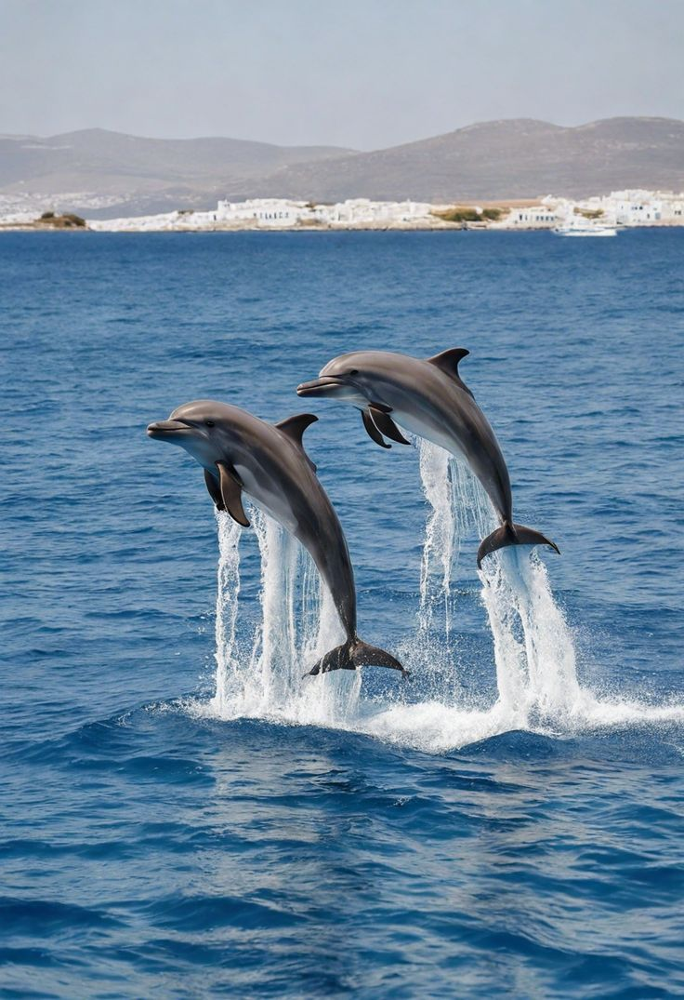
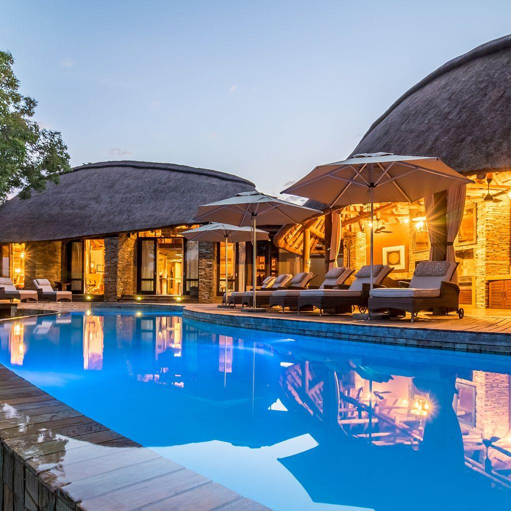
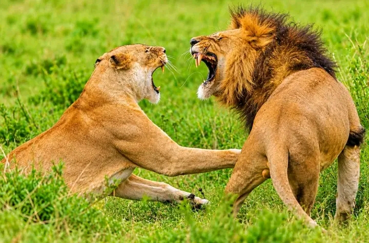

Full day
Wasini Island Dolphin & Snorkeling Tour
Full-day marine experience. From USD 85 / KES 11,000 per person, indicative.
Discover more →Discover extraordinary wildlife, beautiful coastlines and meaningful journeys with travel plans shaped around your interests, time and budget.
Start with a few popular ideas, then ask us to tailor the details.

Full-day marine experience. From USD 85 / KES 11,000 per person, indicative.
Discover more →
From USD 420 / KES 54,000 per person, indicative.
Discover more →

Prices are indicative starting points and must be reconfirmed. Final quotations depend on travel dates, group size, accommodation, park fees, transport and inclusions.


Fleypat Adventures is a Mombasa-based tour and travel company established on 9 April 2022 by Felix Ivayo. We help travellers discover Kenya, East Africa and international destinations through carefully coordinated travel experiences.
Our services include wildlife safaris, beach holidays, excursions, hotel reservations, airport transfers, group and corporate travel, air ticketing and car hire arrangements.



We shape trips around your interests, pace and budget.
A Mombasa base with knowledge of the coast and safari connections.
Options for solo travellers, couples, families and groups.
Help with accommodation, transfers and travel arrangements.